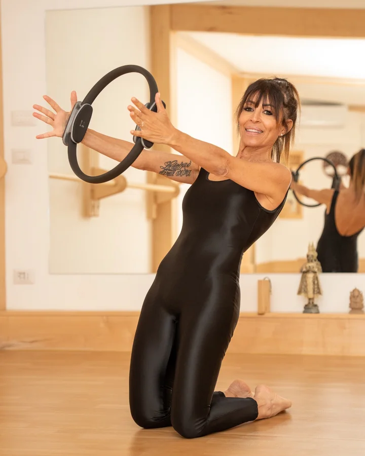
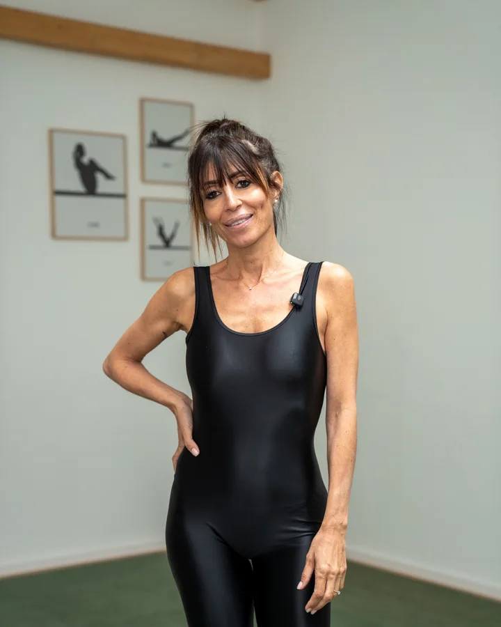

Ascolto
Il corpo viene guidato con attenzione, rispettando tempi, limiti e obiettivi personali.
Pilates in Testa · Michela Morini
Lezioni di Pilates precise, personali e progressive: un lavoro sul corpo che parte dall’ascolto, dalla postura e dalla qualità del movimento.


Un approccio tecnico ma umano: Michela osserva, corregge e adatta ogni esercizio alla persona. Niente forzature, niente automatismi: il Pilates diventa uno spazio per costruire forza, controllo e fiducia nel proprio corpo.
Il metodo
Il Pilates non è solo eseguire esercizi: è imparare a muoversi in modo consapevole, sicuro ed efficace. La qualità viene prima della quantità.
Ogni lezione lavora su controllo, postura, mobilità e tono muscolare, con correzioni puntuali e una progressione pensata per il livello reale della persona.
Il corpo viene guidato con attenzione, rispettando tempi, limiti e obiettivi personali.

Ogni movimento ha una logica: postura, respirazione e controllo lavorano insieme.

Il cambiamento nasce da una pratica regolare, sostenibile e ben costruita.
Percorsi
Per lavorare su obiettivi specifici: postura, mobilità, forza, recupero, consapevolezza corporea.
Un contesto curato, dinamico e motivante, con spazio reale per correzioni e attenzione.
Percorsi adattati a una fase delicata, con esercizi sicuri, respiro e ascolto del corpo.
Lezioni anche a distanza, con guida in diretta, controllo dell’esecuzione e continuità nel percorso.

Chi sono
Ex ballerina, Michela incontra il Pilates dopo un infortunio e ne scopre il valore come pratica di recupero, benessere e trasformazione personale.
Da questa esperienza nasce un modo di insegnare preciso, empatico e molto attento al singolo. Ogni persona viene accompagnata passo dopo passo, con esercizi adattati al proprio livello, ai propri obiettivi e al proprio momento di vita.
Studio e movimento
Luce naturale, linee pulite e lavoro sul corpo: ogni immagine racconta una pratica precisa, controllata e personale.



“Il corpo cambia quando impariamo ad ascoltarlo davvero.”
Recensioni
“Preparatissima e attenta. Segue allieve e allievi a 360 gradi, trasmettendo passione e senza trascurare le caratteristiche di ognuno.”
Caterina“Preparata, professionale, empatica e sempre aggiornata. Molto semplice da seguire anche online.”
Maria Rita“Lezioni dinamiche, coinvolgenti e ben strutturate. Attenta alle esigenze di ogni partecipante.”
EugeniaContatti
Per lezioni individuali, duetti, piccoli gruppi, online, gravidanza o post-gravidanza, il modo più semplice è scrivere o chiamare direttamente.